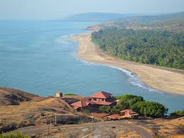
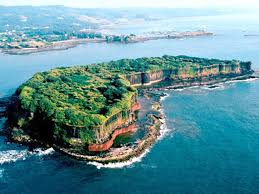
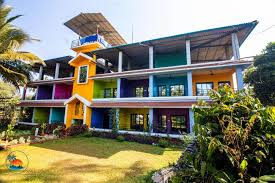
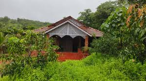

Dapoli is a popular coastal town in the Konkan region, known for its beautiful beaches, historical forts, and scenic views.

A long sandy beach perfect for sunrise views and relaxation.

An ancient sea fort offering panoramic views of the Arabian Sea.
A historic temple surrounded by lush greenery and peaceful paths.

rating: 4.6 | ₹3200 per night

rating: 4.3 | ₹2800 per night